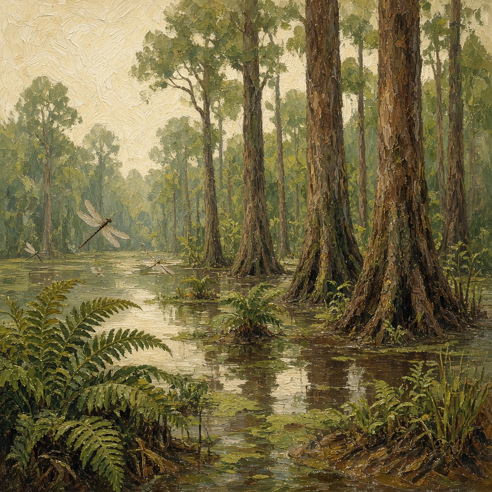
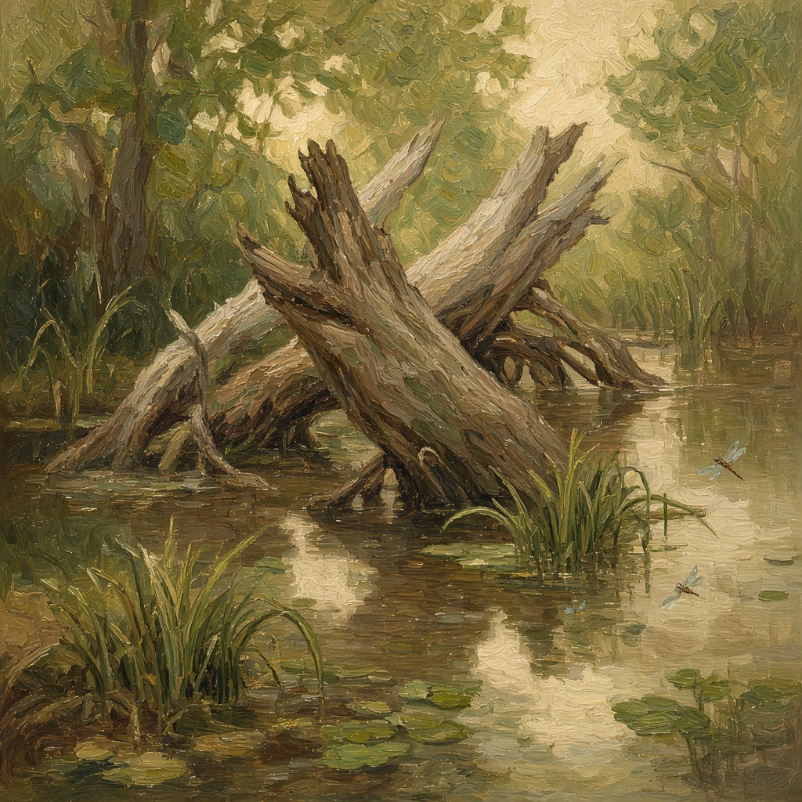
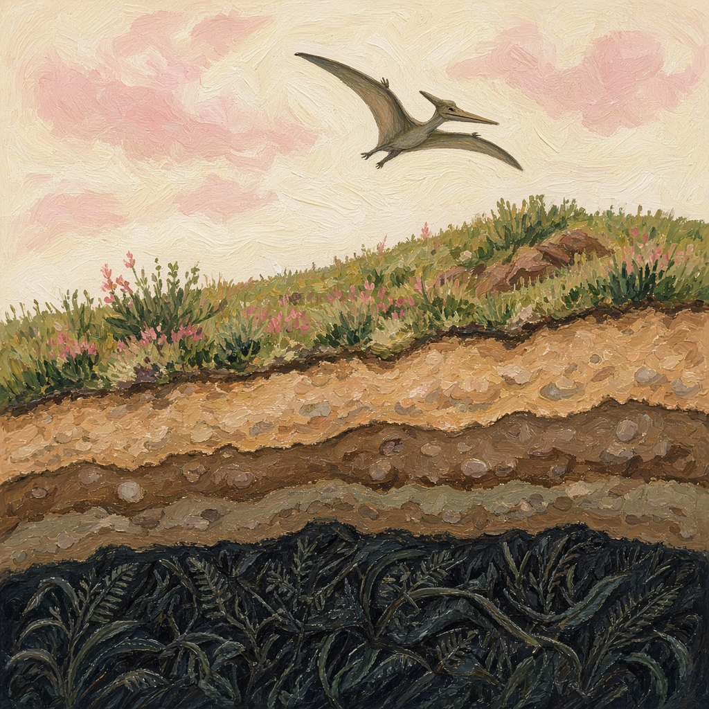
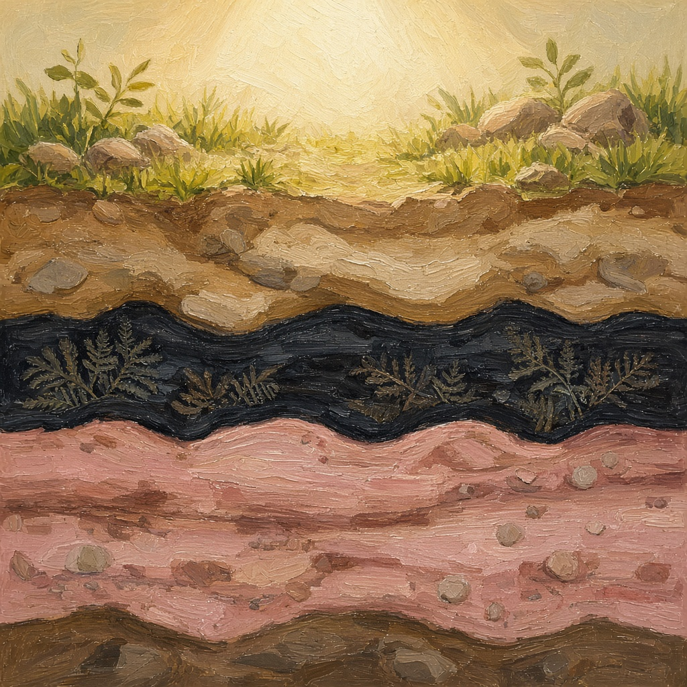
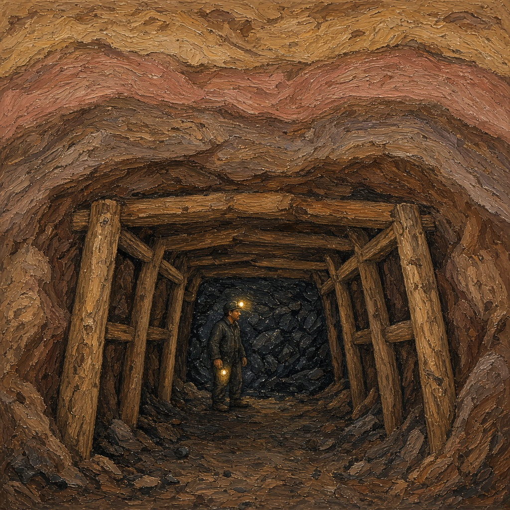
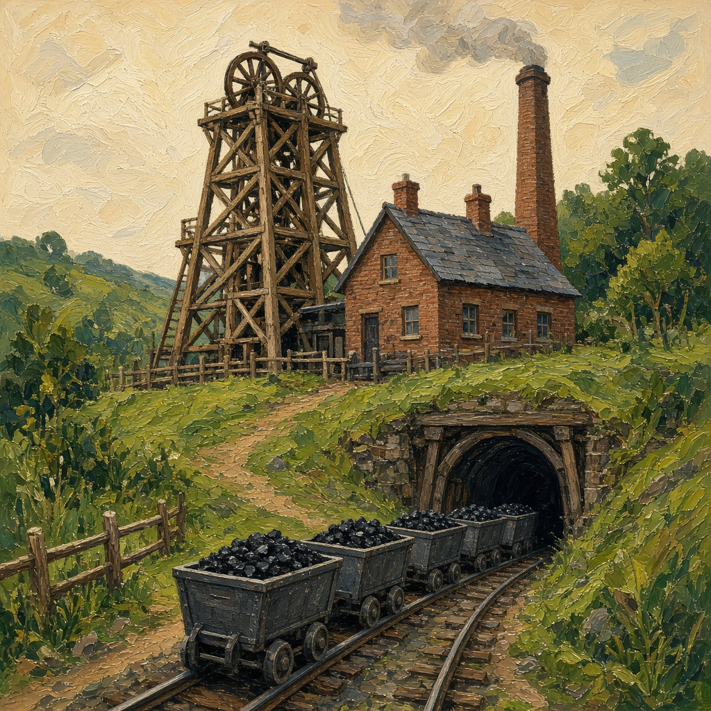

The story of coalThe story of coalסיפור הפחםסיפור הפחם
By the end of this page, say how coal was made.By the end of this page, explain how coal formed under the ground.בסוף העמוד תוכלו לומר איך נוצר הפחם.בסוף העמוד תוכלו להסביר כיצד נוצר הפחם מתחת לאדמה.
Coal is sometimes on top of the ground, but most coal is in layers deep under the ground. How was coal made?Coal is sometimes found on the surface of the earth, but it is usually found in layers deep underground. How did coal form?לפעמים הפחם נמצא על פני האדמה, אבל בדרך כלל הוא בשכבות עמוק באדמה. איך נוצר הפחם?הפחם נמצא לפעמים ממש על פני האדמה, אבל לרוב הוא שוכב בשכבות עמוקות. איך הוא נוצר?

1. A very, very long time ago, giant forests covered the earth.1. Once, a very long time ago, the earth was covered with enormous forests and swamps.1. לפני המון המון שנים כיסו יערות ענקיים את הארץ.1. פעם, לפני המון שנים, היה כדור הארץ מכוסה ביערות ענק ובביצות.

2. The trees died and sank into the swamps.2. When the trees died, they fell and sank into the swamp water.2. העצים מתו ושקעו בביצות.2. כשמתו עצי היער, הם נפלו ושקעו במי הביצה.

3. Sand and mud covered the dead trees. More layers piled on top.3. Layers of sand and mud buried the plants, and the pile grew heavier and heavier.3. חול ובוץ כיסו את העצים המתים. עוד ועוד שכבות נערמו.3. שכבות של חול ובוץ קברו את הצמחים, והערימה נעשתה כבדה יותר ויותר.

4. After millions of years, the buried plants turned into coal.4. Over millions of years, with no air and under great weight, the plants turned into coal.4. אחרי מיליוני שנים הפכו הצמחים הקבורים לפחם.4. במשך מיליוני שנים, בלי אוויר ותחת כובד רב, הפכו הצמחים לפחם.

5. The coal stayed in black layers deep under the ground. Miners dug down to it.5. The coal remained in black layers deep underground, so miners dug shafts down to reach it.5. הפחם נשאר בשכבות שחורות עמוק באדמה. כורים חפרו אליו.5. הפחם נשאר בשכבות שחורות עמוק מתחת לאדמה, והכורים חפרו פירים כדי להגיע אליו.

6. Today mines bring the coal up, and people use a lot of it.6. Today the mines bring up the coal, and people use it in very large amounts.6. היום המכרות מעלים את הפחם, ואנשים משתמשים בהרבה ממנו.6. היום מעלים את הפחם מן המכרות, ובני האדם משתמשים בו בכמויות גדולות.